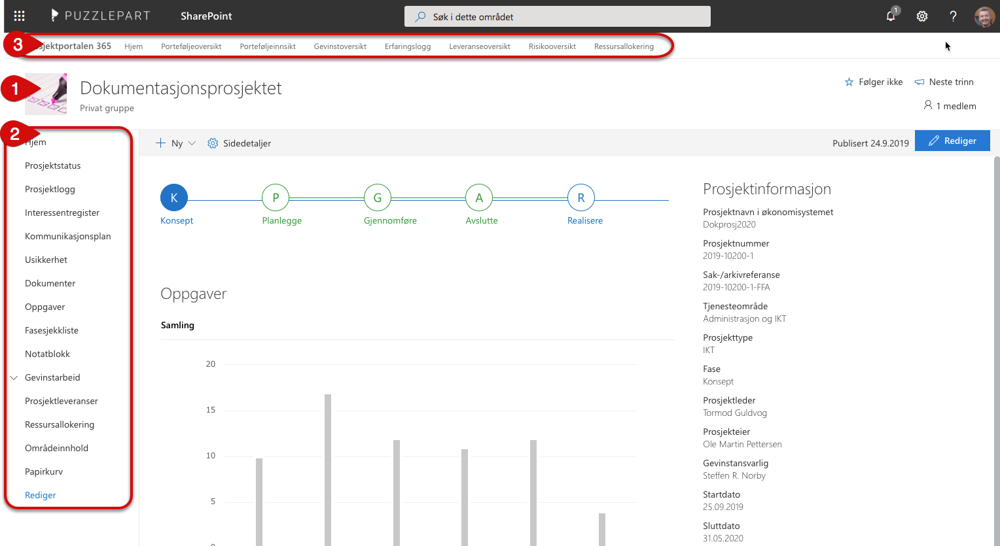

De tre viktigste metodene for å navigere Prosjektportalen 365, er:
Områdeikonet: Trykk på områdeikonet for å komme tilbake til forsiden på området du er i (enten på portefølje eller prosjektnivå).
Venstrenavigasjon: Brukes i prosjektområdene til å navigere i verktøy og lister i området du er i. I prosjektområder vil det si at du beveger deg mellom innhold innenfor det aktuelle prosjektet. Hjem-lenken tar deg alltid til forsiden for prosjektet.
Toppnavigasjon: Denne tar deg til forsiden i Prosjektportalen 365 eller direkte til ulike funksjoner i porteføljeområdet.
Områdeikonet og venstrenavigasjonen er tilpasset til det området du befinner deg i. Toppnavigasjonen er lik uansett hvilket område i Prosjektportalen 365 du befinner deg i og lenker tilbake til porteføljenivå.